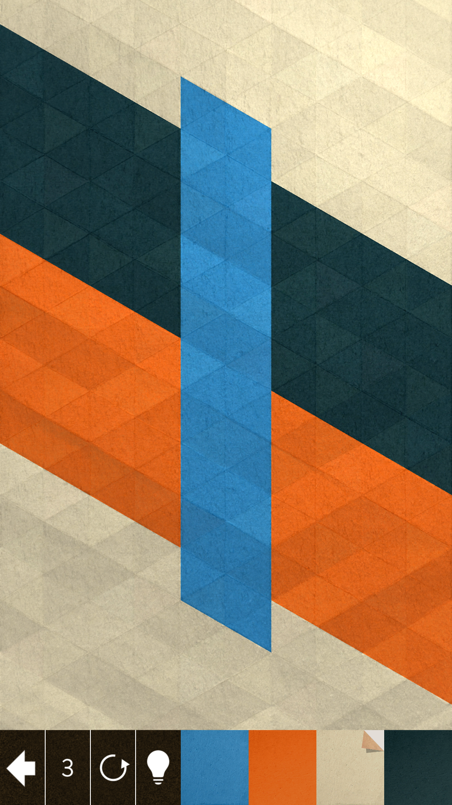
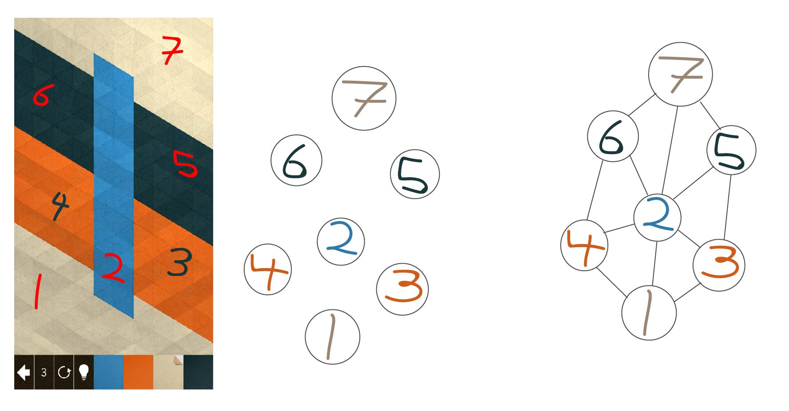
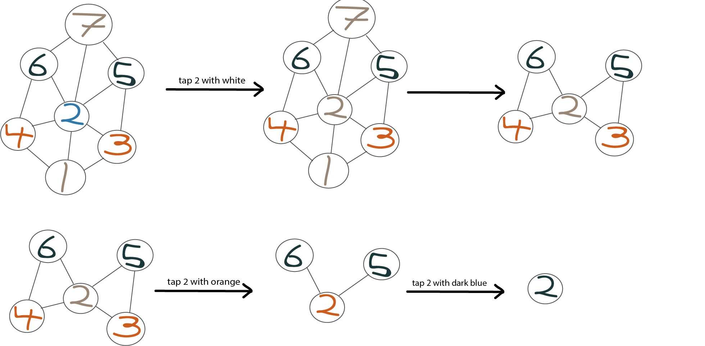
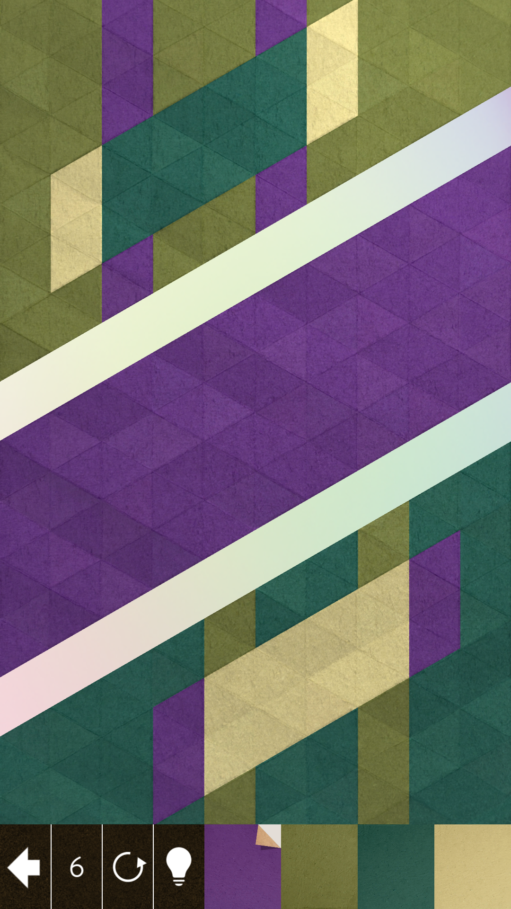
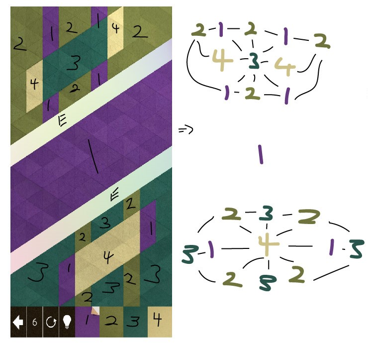

Solving KAMI with graph networks
What is KAMI?
KAMI is a 2-dimessional puzzle game. The goal of the game is to tile the screen with only one colour. This is done by selecting a colour and then tapping an area on the screen. The colour then propagates to its neighbours.
This is one of the puzzles KAMI has to offer. At the bottom left you can see the number 3, this tells us we can only make 3 ‘moves’ to solve the puzzle. At the bottom right is our colour pallet. The way we make a move is by selecting a colour from the pallet and then tapping somewhere on the screen. If we were to say choose white and tap somewhere inside that light blue pillar, the white would appear on the triangle we touched and would spread out until the blue pillar became white. Our next move could be to select orange and tap anywhere inside the white section. The orange will then propagate throughout that white section. Finally, we choose dark blue and tap the orange. The puzzle is now solved as the whole area is now one colour!
Some important things to note
Each puzzle is made of a grid of triangles, so something like the light blue pillar in our first puzzle is not at all a single object but a collection of 40 triangles. Colour will propagate from one triangle to another only if the triangles have a common side and a common colour. So it is alright to pretend that the light blue pillar is a single object because any colour I place inside it will propagate throughout the entire pillar. This is unlike the orange sections!
Here there are two white sections, because there are no white triangles bridging the gap between them. However (2) after I turn the light blue pillar white, we can call all of the white triangles one section.
Other thing to note, KAMI puzzles often have multiple solutions! Instead of turning the white area orange like we did In step 3 we could have turned it dark blue, and then finished the puzzle by covering the screen in orange.
What are graph networks?
If you’ve ever taken a ride on the subway in the Greater Toronto Area, you would recognize this as the northern end of the subway map. However, you might not have recognized this as a graph network! All a graph network is are a bunch of station connected by a route, though mathematicians call each station a ‘node’ and the route between the nodes an ‘edge’. In real life the routes between each stop is not so perfectly straight nor so evenly spaced apart as the map shows, but that is fine! The map is not wrong because it only cares about the order of the stops and the connections between them. We can say that the subway map is an abstraction of reality.
Connecteing graph networks and KAMI
Recall that although each KAMI puzzle is made of a few hundred triangles it is ok to abstract the triangles into larger sections, like the light blue pillar. By doing this each puzzle is made up of only a few sections. If we take these sections and represent them as nodes we will have something like this. And now we look at where these sections meet and draw edges between the nodes to represent that. Now we have a graph network that is an abstraction of the puzzle but is EXACTLY the puzzle we started with. If you were to take this graph network and work backwards to create a KAMI puzzle, it is very unlikely that the puzzle you will make will look anything like what we started with. But the two puzzles will ALWAYS have the exact same solution! That is the power of graph networks.
Solving KAMI with graph networks
Here is what solvng the puzzle I introduced in the begging looks like in graph network form.
Just as before our first step is to take the middle light blue section and paint it white. We now have three white sections, but just as before we saw the sections as one. Because these white nodes have a direct connection, we know it is ok to represent them as one section.
We continue turning the white into orange, and finally the orange into dark blue.
We know the puzzle is solved when we are left with only one section of one colour.
In introducing KAMI I walked through how to solve the puzzle but did not tell you why I made the moves I did. How should one decide that a beginning move is the right one? This puzzle is quite simple and has many different solutions, so If one tried to brute force an answer it would not take them long. However, more complicated puzzles like the one below require some thought.
Here there are two bands of empty space marked by ‘E’. No colour can fill this space, nor can any colour propagate through it. The empty space cuts our puzzle into three parts, so our end condition is no longer one node of one colour but three of the same colour. Similar to the last puzzle we can turn it into a graph network.
Now that we have our graph network where do we start? We want the screen to be all one colour, seeing that the middle section is already purple there is no sense in wasting a move on changing its colour. So we will leave the middle section purple and try to turn the rest of the puzzle purple. Looking at our graph network we see that the bottom’s beige and the top’s dark green both have the most amount of connections. If we are trying to propagate our colour choices across the entire plane its a good idea to start with the spot that has the most edges. But now we are left with the dilemma of deciding what colour we should change these nodes to. That is answered by looking at the nodes of the edges and tallying which colour shows up more. If there is a tie, we count the number of edges each of the nodes have and choose the colour with the maximum tally.
So far our algorithm is as such: 1. Look at each node and count its edges; choose the node with the max amount. If there is a tie; choose the node with the most neighbours of one colour. 2. Colour that node with the same colour as the most common neighbour. 3. If the puzzle is not yet solved return to step one.
Implementation and Conclusions
So far, I have tried a more rigorous form of the above algorithm and have found a lot of success though I am yet to prove it mathematically. I have also implemented the graph networks and a partial solution function into Python but there is still much work to be done there as well. This post is meant to serve as an example of the kind of small projects I like to create for myself. If you’ve found any portion of it unclear or you have other questions, I’d love to get in touch, please reach out to me at matthewsantos314@gmail.com